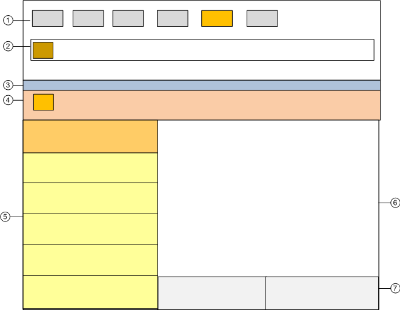
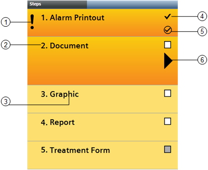

Assisted Treatment Window
Assisted Treatment Workspace

1 | Summary bar | Contains a set of event lamps that provide an overview of the events in the system. For more details, see Event Lamps and Summary Bar. |
2 | Event Detail bar | In some configurations, prominently displays an event that requires immediate attention across the top of the screen. |
3 | Title bar | Shows the name of the Assisted Treatment window. It also contains some icons to open/close the Contextual pane (7), lock the layout and, restore down the window. |
4 | vent descriptor | Contains the event button, event details and event-handling commands for the event currently being processed. For more details, see the reference section. The background color reflects the event category color, but in a darker shade. The |
 icon in the event button indicates that the event is being processed by assisted treatment.
icon in the event button indicates that the event is being processed by assisted treatment.5 | Selection pane | Contains the list of operating procedure steps you must perform to process the event. |
6 | Primary pane | The Default tab contains the system application associated with the currently selected step in the procedure. |
7 | Contextual pane | Hidden by default. When open, it provides additional information, actions, and resources about the object that issued the event. The following tabs are available:
|
Operating Procedures Steps Workspace
When you open the Assisted Treatment window, the Selection pane on the left lists the steps of the guided procedure you must follow to handle the event. This list helps you select and carry out the steps in the correct sequence, which depends on how a procedure was configured. Additionally, depending on configuration, a step can be:
- Automatic or manual
- Mandatory or optional
- Repeatable or not repeatable

1 | Symbol that indicates a mandatory step.
|
2 | Step identifier. This number may or may not correspond to the execution order.
|
3 | Briefly describes the step type.
|
4 | Depending on the step's configuration, you will see a white or gray check box:
Once you check off a step as executed, a checkmark icon displays in the place of the check box, to indicate that the step has been completed.
|
5 | Graphically indicates the step's execution status as follows:
|
6 | Graphically indicates that the step is selected and the relevant application for performing that step is available in the Default tab of the Primary pane.
|
- Each step has the same color as the event's category. When you select a step, it expands and changes to a darker color to indicate that it is being executed. Once you complete a step, a graphic icon indicates the execution outcome of that step (successful or failed).
- You must execute the first mandatory step before the following mandatory steps can be selected and executed.
- Whether the steps must be executed sequentially, or may instead be freely executed in any order, depends on how the assisted-procedure was configured.
- When you move your cursor over a step during the execution of an assisted procedure:
- If it turns into hand, this means that you can execute the step.
- If it turns into arrow, this means that you cannot execute the step because it is locked. This may happen if a preceding mandatory step has not been executed yet, or during the execution of sequential steps.
- Once you have completed all the actions required by a step, the gray check box turns white and you can mark that step as completed.
The system provides the following details of a step in a tooltip: name, execution type (mandatory or optional), type (automatic or manual), state (unknown, successful, or failed ), and notes (error message, if any). Also, once a step is executed, the name of the operator who executed the step displays in the tooltip. If a step fails, an error message displays in the tooltip or in the window status bar.
Assisted Treatment License and Access Rights
Assisted treatment is covered by a license. If assisted treatment is not available, you can use the other event-handling methods provided by the system (fast treatment and investigative treatment). If the license is installed but later expires or is lost for any reason, assisted treatment is available only for those events that were already undergoing assisted treatment, and that have an associated operating procedure. If a new event occurs, fast treatment and investigative treatment will remain available.
In addition to the license, the availability of assisted treatment depends:
- On your user group rights. If you have no appropriate access permission, you cannot initiate assisted treatment.
- On the system configuration (that is, on whether an assisted procedure has been configured for handling a specific type of event. If there is no such procedure configured, investigative treatment is available instead.